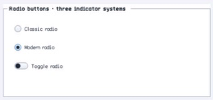

class · visual
RadioButton
RadioButton specializes ButtonBase with retained checked state, container-scoped named exclusion groups, optional automatic checking, three indicator families, ordered events, and radio semantics.
Visual evidence

Ownership and hierarchy
- Hierarchy
- ButtonBase → RadioButton
- Declaration
- include/gui_forms/controls/button_base/radio_button/radio_button.hpp:9
- Definition
- src/controls/button_base/radio_button/radio_button.cpp
Declared methods
RadioButton public
explicit RadioButton(StableId stable_id, std::string text =Constructs an unchecked auto-checking radio command with classic indicator policy.
checked public
[[nodiscard]] bool checked() const noexceptReturns retained group selection state.
set_checked public
void set_checked(bool checked)Commits selection and synchronously clears matching live peers within the exclusion scope.
group_name public
[[nodiscard]] const std::string& group_name() const noexceptReturns the optional named exclusion key; an empty key uses the ordinary container scope.
set_group_name public
void set_group_name(std::string name)Validates bounded UTF-8, updates group identity, and reconciles exclusion when already checked.
auto_check public
[[nodiscard]] bool auto_check() const noexceptReports whether activation selects the radio automatically.
set_auto_check public
void set_auto_check(bool enabled)Enables or disables automatic selection during activation.
indicator_style public
[[nodiscard]] ChoiceIndicatorStyle indicator_style() const noexceptReturns classic disc, modern disc, or toggle-switch presentation.
set_indicator_style public
void set_indicator_style(ChoiceIndicatorStyle style)Validates indicator vocabulary and invalidates size, paint, and semantics.
checked_changed public
[[nodiscard]] Event<bool>& checked_changed() noexceptReturns the event published after retained selection commits.
on_paint public
void on_paint(Painter& painter, Rect local_damage) overrideRecords the selected indicator family, text, focus, hover, press, and disabled cues.
visual_outsets public
[[nodiscard]] Insets visual_outsets() const noexcept overrideReports material outsets for the active visual recipe where applicable.
on_activate public
void on_activate() overrideSelects through the group law when auto-checking, then publishes inherited click if still alive.
semantic_descriptor public
[[nodiscard]] SemanticDescriptor semantic_descriptor() const overrideProjects radio-button role, checked state, group-aware selection, and press action.
set_checked_without_exclusion private
void set_checked_without_exclusion(bool checked)Synchronously updates the retained checked without exclusion property. Validation, typed invalidation, and notifications are defined by the implementation.